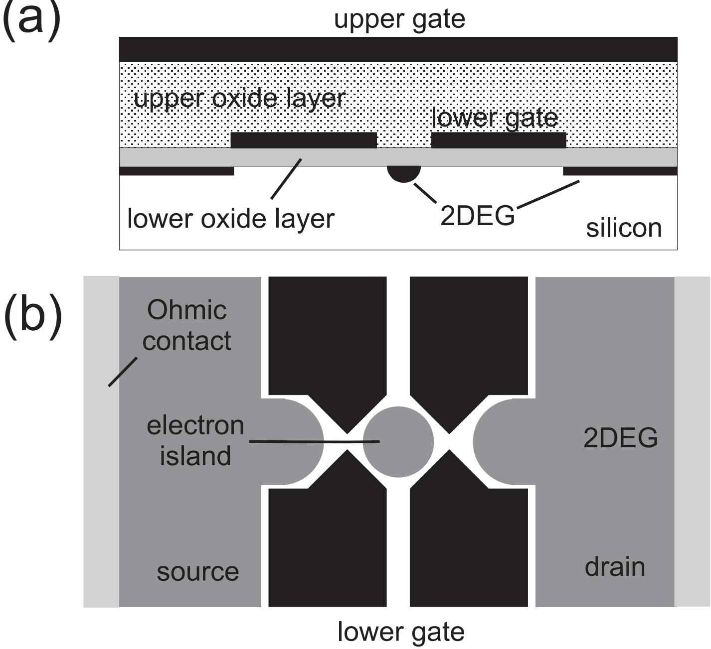
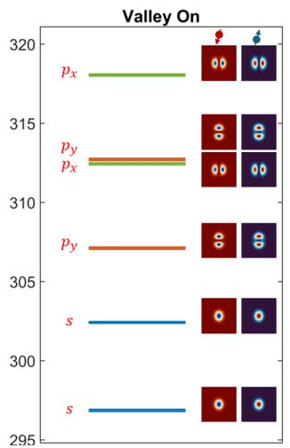
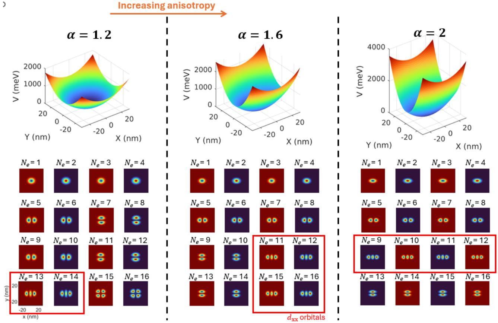

基本假设
常相互作用模型（constant interaction model, CI 模型）是描述半导体量子点静电学最常用的理论框架。它把一个包含几个到几百个电子、同时与源漏电子库和多根栅电极耦合的复杂多体系统简化为一个经典电容网络加一组刚性能级，基于两条假设：
- 量子点内电子之间、以及点内电子与周围环境中电子的库仑相互作用，全部用一个不随电子数变化的恒定总电容描述：
即量子点与源极（source）、漏极（drain）、栅极（gate）之间的电容之和； 2. 量子点的单粒子能谱 （可含磁场依赖）由束缚势决定，与点内电子数目无关，电子只是逐个填充这些刚性能级。
第一条假设把量子多体相互作用完全经典化——所有交换、关联效应都被吸收进 ；第二条假设则保留了量子点的”原子性”来源：分立的轨道能级。两者结合，使系统总能量写成一个静电充电项与 occupied 能级之和，这就是全部理论结构。
单量子点：静电能与电化学势
漏极接地、源极偏压 、栅压 时，含 个电子的量子点总能量为
其中 是所有电极电压为零时补偿背景正电荷的电子数，、 分别是源极偏压与栅压经各自电容感应到点内的电荷。第一项是纯粹的经典静电能 ，第二项是已占据单粒子能级之和。
推导梗概（电容矩阵方法）：把量子点与各电极看作导体节点系统，节点电荷与电势由电容矩阵联系 ，系统总静电能为 。将矩阵按”量子点”与”电极”分块后，能量拆成三项：点内项、点–电极相互作用项、纯电极项。关键在于，当点内电荷改变 时电极上会感应电荷，为维持电极电势不变电源必须做功，且该功恰好等于相互作用项的变化（），因此可归入量子点自由能的只剩点内项 。对单点取 即得上式的二次型。这一推导说明 并非单纯的几何电容储能，而是计入了电源做功的热力学自由能。
向点中填入第 个电子所需的最小能量即电化学势（electrochemical potential）：
其中 为充电能（charging energy）。相邻电化学势之差给出加电子能（addition energy）：
是相邻单粒子能级间隔。对百纳米量级量子点 ，加电子能近似恒定， 等间距排列——这是库仑振荡近似等周期的根源。
由 对 的线性依赖可直接读出杠杆臂（lever arm）的微观定义 ；令相邻电荷态简并 ，得库仑峰的栅压周期
即峰周期直接度量栅电容；多电子区 时各电子充电能几乎相等（），峰严格等间距出现。
双量子点推广与蜂窝图
常相互作用模型可以原样推广到双量子点。以串联双点为例：点 1、点 2 分别经电容 、 与栅极耦合，经 、 与源漏耦合，两点之间经互电容 静电耦合；各点总电容 。系统静电能为
其中 汇总栅压诱导项，三个特征能量为
是一点中电子数变化引起另一点电化学势的移动量，即点间静电耦合能。两个极限很有启发性： 时 退化为两个独立单点能量之和； 时 化为 ，强耦合双点在静电上等效于一个含 个电子的大单点。
双点的电化学势
（ 由交换指标得到）对两个栅压均线性，因此固定电子数 的区域在 – 平面上是由直线围成的多边形。随 从零增大，稳定图从正交直线的方格连续变形为六边形蜂窝结构——蜂窝图（honeycomb diagram），即双点电荷稳定图的标准形态；强耦合极限下蜂窝塌陷回单点的平行直线族。蜂窝顶点处 四重简并，称为三相点（triple point），是双点输运与电荷量子比特操控的工作点。
由简并条件可直接读出蜂窝图的边距：
前者是单点充电对应的栅压周期，后者是邻近点加一个电子引起的电荷转变线平移，二者之比直接给出耦合强度 。计入量子能级修正后， 应替换为 的形式。
参数与量级
| 量 | 典型量级 | 说明 |
|---|---|---|
| 总电容 | – | 百纳米门控量子点；浅刻蚀 GaAs 单点实测 |
| 充电能 | 同器件实测 ，对应 | |
| 单粒子能级间隔 | – | 多电子区 ，加电子能以充电项为主 |
| 库仑峰栅压周期 | – | ，反比于栅电容 |
| 杠杆臂 | – | 栅压到点内电化学势的能量转换系数 |
| 点间耦合能 | 由蜂窝图 提取 |
可观测前提与库仑阻塞相同： 且点–库接触电导 ，否则热激活与量子涨落抹平离散充电。
实验特征与参数提取
常相互作用模型的价值在于它把每一种标准测量图样都变成参数提取器：
- 库仑振荡：零偏压栅压扫描中， 依次掠过源漏费米面（）产生等周期电流峰；峰间距乘杠杆臂即加电子能，逐个排空电子可标定绝对电子数；
- 库仑菱形：– 平面的微分电导图中，阻塞区展开为库仑菱形，菱形半高给 、宽度给 、两边斜率给杠杆臂，菱形外的平行电导线给激发态间隔 ；
- 蜂窝图：双点两个栅压扫描中，蜂窝边距之比给 ，三相点间距给各点充电能，是双点器件标定的第一步。
这些提取结果正是后续所有量子比特实验的标定基础：确定电子数、换算栅压–能量、评估点间耦合，然后才谈得上QPC 电荷传感或射频反射测量下的电荷态读出与操控。
适用范围与局限
CI 模型是纯经典静电模型，其失效场景同样有明确的诊断特征：
- 隧穿耦合导致的反交叉：在三相点附近，点间隧穿耦合 使 与 态杂化，电荷转变线发生弯曲、张开 的能隙。CI 模型不含任何隧穿矩阵元，无法解释这种弯曲——蜂窝图中直线的弯曲程度恰恰是提取 的手段（ 明确指出这一局限）；
- 强关联与自旋效应：模型不含自旋，无法描述交换作用、单重态–三重态劈裂、近藤效应等，需要加入自旋与关联项；
- 开放量子点与高温： 或 时电荷量子化本身失效。
系统的量子化推广是 Hubbard 模型（或扩展 Fermi-Hubbard 模型）：
其中前三项——化学势、点内库仑排斥 、点间排斥 ——正对应 CI 模型的 、 与 ；CI 模型相当于丢掉隧穿项 与交换项 的经典极限。反过来，Hubbard 模型的参数 、 通常就用 CI 模型从蜂窝图标定。在多量子点阵列中，栅极–量子点交叉电容使 同时依赖所有栅压，电荷转变线不再是直线簇，需要交叉电容矩阵与虚拟栅极技术补偿，这仍是 CI 模型框架下的直接延伸。
经典统计检验：峰间距分布 vs Wigner 猜想（Simmel 1999）
CI 模型还有一个可被统计检验的推论：把单粒子能级 视为无相互作用的随机谱，CI+随机矩阵理论（RMT）预言库仑振荡的归一化峰间距 （）服从 Wigner 猜想
其涨落约 ；若能级有自旋简并，分布还应是双峰。Simmel 等人在硅 MOSFET 叠层栅量子点上做了强相互作用区间的检验——器件约 200×200 nm， aF、 meV；Weyl 公式 eV（ 计入自旋与谷简并）给出 、相互作用参数 ，均远超此前 GaAs/AlGaAs 实验（）。关键的方法学差异是用顶栅扫描改变密度而非用 plunger 栅挤压器件——峰间距统计不被器件形变污染。

器件截面（叠层栅 Si MOSFET 量子点）：p 型 Si 衬底上依次为约 20 nm 下氧化层、下栅层、约 80 nm 上氧化层与覆盖全部源漏的上栅；上栅电压感生 Si/SiO₂ 界面处的二维电子气，下栅图形在其中凿出约 250×270 nm 的量子点——上栅扫密度、下栅控势垒，使峰间距统计免于器件形变干扰（320 mK 测量）。图源：Simmel et al. (1999), Fig. 1。结果：峰间距分布单峰、近高斯，既不遵从 Wigner 猜想、也没有自旋简并双峰；归一化涨落 ，对应约 115 µeV——是平均能级间距 的 7.5 倍、CI+RMT 预言的 15 倍（考虑 的热展宽修正后为 30–45 倍）。由于 ，涨落幅度 强烈指向加电子能的涨落随 而非 标度——电子–电子相互作用（充电能本身的涨落）主导了统计，CI+RMT 组合在此区间失效；自旋简并的双峰结构也被 的相互作用冲掉。这一”峰间距统计”自此成为检验 CI 模型适用边界的标准实验范式。
超越 CI：含谷自由度的 Hartree-Fock 建模（Liang 2024）
CI 失效之后的下一步是单 Slater 行列式的 Hartree-Fock：完整多体解是行列式的叠加、复杂度随电子数指数增长，HF 用一个行列式换取模拟数十电子的能力（已演示至拉长硅量子点中的 20 电子）。针对硅的两个复杂性——强 e-e 相互作用与导带双谷——Liang 等人把哈密顿量写成四个自旋-谷-轨道自由度的形式：面内用有效质量近似（），纵向 z 用二近邻紧束缚（跃迁参数 ）纳入谷，配以典型 40 meV 的垂直电场与各向异性简谐约束（各向异性参数 ）。把介电常数人为调大可关闭相互作用项，得到纯泡利关联的单粒子对照。

电子-电子相互作用的重要性：逐项能量分解显示库仑能贡献超过总能量的一半，且占比随电子数增长但非线性——波函数被排斥力推向高势区域的形变与直接相互作用同等重要，单粒子图像（CI 的底座）在多电子硅点中系统性失效。图源：Liang et al. (2024), Fig. 4。

约束各向异性 α 对量子点形成的影响：各向异性改变电荷密度与填充序列——多电子建模是器件设计验证（如利用高轨道态的编码方案）与实验数据解读之间的桥。图源：Liang et al. (2024), Fig. 5。
两条结论把 CI 词条的叙事接续下去：其一，e-e 相互作用贡献超过总能量一半且占比随电子数非线性增长（波函数形变与直接排斥同等重要）；其二，各向异性 系统性改变点的形成与填充——为利用高轨道态的多电子比特方案（如电四极自旋共振）提供建模基础。相互作用再往上、密度再往下，电荷密度本身开始分立化——那就进入Wigner 分子的领域。
与其他概念的关系
- 模型的两条假设直接定义了充电能 与电化学势 ，二者是本模型的核心输出；
- 是否落入偏压窗口决定库仑阻塞的发生与否，阻塞区在有限偏压下展开为库仑菱形；
- 双点版本给出电荷稳定图蜂窝结构的全部几何，三相点是电荷量子比特与单重态–三重态量子比特的操控基点；
- 模型不含隧穿耦合，三相点附近的反交叉弯曲正是超出本模型的信号，用于提取 ；
- 阵列化时，交叉电容串扰由虚拟栅极在本模型框架内补偿，支撑自动调控。
参考文献
- 常相互作用模型及其在输运实验中的验证：van der Wiel et al., RMP 74, 801 (2002)。
- Simmel, F., Abusch-Magder, D., Wharam, D. A., Kastner, M. A., Kotthaus, J. P. Statistics of the Coulomb blockade peak spacings of a silicon quantum dot (1999). arXiv:cond-mat/9901274（QAtlas 缓存：cond-mat_9901274）。
- Liang, D. H., Feng, M., Mai, P. Y., Cifuentes, J. D., et al. Electronic Correlations in Multielectron Silicon Quantum Dots. IEEE NANO 2024（2024）. DOI: 10.1109/NANO61778.2024.10628628；arXiv:2407.04289（QAtlas 缓存：2407.04289）。
完整文献库（含各篇站内全文页）见 参考文献库。